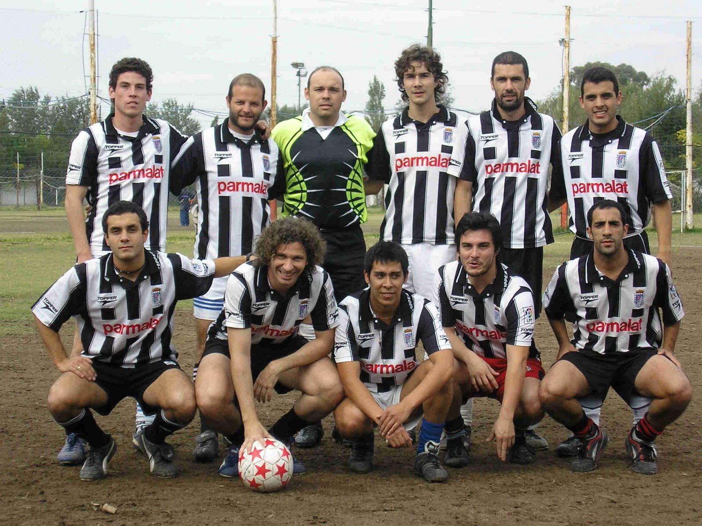

Como nació el Deportivo Dalla Costa?
Dalla Costa es una institución deportiva creada oficialmente en el año 2002, en la ciudad de Córdoba, argentina. Sus raíces se remontan al año 1993, cuando un grupo de integrantes del equipo de fútbol de la por entonces Facultad de Filosofía y Humanidades de la Universidad Nacional de Córdoba, decidió convertirse en un grupo en sí y para sí. Varios de esos jugadores forman Dalla Costa, que inicio ese año su participación en la Liga Jujeña de Fútbol en Córdoba. Deportivo Dalla Costa toma su nombre de Andrés Dalla Costa... jugador ingresado en 1997, versátil como pocos, carpintero, enfermero y psicólogo. Tras varios años compartidos fallece en un accidente en Italia, y su homenaje se le da el nombre al equipo.
(AMPLIAR LA HISTORIA Y ACTUALIDAD DEL EQUIPO)
A lo largo de los años fue desempeñandose en distintas ligas de futbol amateur en la Ciudad de Cordoba, hasta desembarcar en el año 2020 en el Torneo Golden, ubicado al sur de la capital. El equipo cuenta actualmente con 4 categorias que comparten momentos unicos todos los sabados. A continuacion podemos ver una foto retro (2006)
